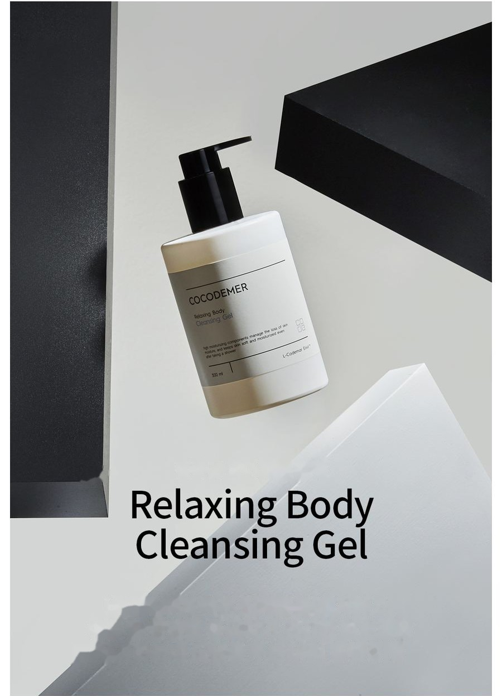
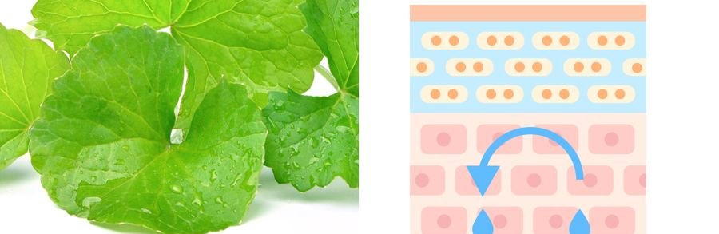

COCODEMER Relaxing Body Cleansing Gel
| Volume | 300ml |
|---|---|
| Suitable for | All skin types |
| Key technology | L-CODEMAR ELIXIR™ |
| Manufacturer · Responsible distributor | JUNGCOS CO., LTD. / COCODEMER CO., LTD. |
This product is not yet listed on the Smart Store. For purchases, please use the store, or contact us through the B2B inquiry.

A body cleansing gel that clears away built-up impurities and delivers moisture and nourishment, helping keep skin smooth and healthy
A cleanser built on damage-free cleansing system technology
Cleanses mildly without compromising the skin barrier, so even sensitive skin can use it comfortably.
It creates a generous, cushiony lather that delivers moisture and nourishment, leaving skin healthy and full of life.
Botanical extracts — burdock, perilla, fig and Centella Asiatica — are made into nano-scale lecithin liposomes for a stable, even cleanse that keeps body skin clean and clear.
Plant-derived ingredients soothe the skin and replenish moisture, so skin does not dry out after a shower and keeps its smooth, hydrated texture.
Key Active Code
A natural cleansing agent derived from coconut oil lifts away impurities mildly enough for sensitive skin.

Ingredients that mirror the skin's own barrier strengthen its protective film and help it hold moisture, so skin stays hydrated and calm after cleansing.
Plant-derived ingredients help tighten the skin and give back its vitality, leaving it fresh and alive.
* The above describes the ingredients, not the finished product.
See the ingredient reference →
L-CODEMAR ELIXIR™
COCODEMER's proprietary technology.
Our multi-layer nano-gel emulsion encapsulation technology holds the core actives — coconut water, phytosterols, 20 amino acids and honey extract — in a stable complex. That complex is then built into a skin-friendly liposomal form that mirrors the structure of skin itself, for the most efficient delivery into the skin.
L-Codemar Elixir™ strengthens the bonds between skin cells. It restores a damaged barrier and forms a strong protective film, so hydration holds for longer.


How To Use
1. Turn the pump anticlockwise and press down.
2. Dispense onto the hands or a shower towel and work into a lather.
3. Apply the lather over the body using your hands or the shower towel.
4. Rinse thoroughly with water.
5. After showering, pat the skin dry with a towel.
A cleanser built on damage-free cleansing system technology
Cleanses mildly without compromising the skin barrier, so even sensitive skin can use it comfortably.
It creates a generous, cushiony lather that delivers moisture and nourishment, leaving skin healthy and full of life.
Botanical extracts — burdock, perilla, fig and Centella Asiatica — are made into nano-scale lecithin liposomes for a stable, even cleanse that keeps body skin clean and clear.
Plant-derived ingredients soothe the skin and replenish moisture, so skin does not dry out after a shower and keeps its smooth, hydrated texture.
A natural cleansing agent derived from coconut oil lifts away impurities mildly enough for sensitive skin.
Ingredients that mirror the skin's own barrier strengthen its protective film and help it hold moisture, so skin stays hydrated and calm after cleansing.
Plant-derived ingredients help tighten the skin and give back its vitality, leaving it fresh and alive.
* The above describes the ingredients, not the finished product.
L-CODEMAR ELIXIR™
COCODEMER's proprietary technology. Our multi-layer nano-gel emulsion encapsulation technology holds the core actives — coconut water, phytosterols, 20 amino acids and honey extract — in a stable complex. That complex is then built into a skin-friendly liposomal form that mirrors the structure of skin itself, for the most efficient delivery into the skin. L-Codemar Elixir™ strengthens the bonds between skin cells. It restores a damaged barrier and forms a strong protective film, so hydration holds for longer.
1. Turn the pump anticlockwise and press down. 2. Dispense onto the hands or a shower towel and work into a lather. 3. Apply the lather over the body using your hands or the shower towel. 4. Rinse thoroughly with water. 5. After showering, pat the skin dry with a towel.
| Net volume or weight | 300ml |
|---|---|
| Suitable for | All skin types |
| Shelf life / period after opening | 30 months from date of manufacture; use within 12 months of opening |
| How to use | On damp skin, take a suitable amount onto a sponge or bath towel, work into a soft lather, cleanse evenly with a massaging motion, then rinse thoroughly with lukewarm water. |
| Cosmetics manufacturer | JUNGCOS CO., LTD. |
| Responsible distributor | COCODEMER CO., LTD. |
| Country of origin | Republic of Korea |
| Full ingredients (INCI) | Cocos Nucifera (Coconut) Water, Water, Glycerin, Disodium Cocoamphodiacetate, Sodium Chloride, Cocamidopropyl Betaine, PEG-120 Methyl Glucose Dioleate, Butylene Glycol, Potassium Cocoyl Glycinate, PEG-120 Methyl Glucose Trioleate, Centella Asiatica Extract, Ficus Carica (Fig) Fruit Extract, Honey Extract, Mentha Piperita (Peppermint) Leaf Extract, Mentha Suaveolens (Apple Mint) Leaf Extract, Rosmarinus Officinalis (Rosemary) Leaf Extract, Salvia Officinalis (Sage) Leaf Extract, Hydrogenated Lecithin, 1,2-Hexanediol, Alanine, Arginine, Aspartic Acid, Carnitine, Ceramide NP, Citrulline, Glutamic Acid, Glutamine, Glycine, Hexylene Glycol, Isoleucine, Lauryl Glucoside, Leucine, Methionine, Ornithine, PEG-40 Hydrogenated Castor Oil, Phenylalanine, Phytosterols, Polyquaternium-39, Proline, Propanediol, Serine, Threonine, Tryptophan, Tyrosine, Valine, Parfum, Sodium Benzoate |
| Functional cosmetic approval | Not applicable |
| Precautions | 1. If the treated area shows red spots, swelling, itching or other abnormal reactions during or after use, or following exposure to direct sunlight, consult a specialist. 2. Avoid use on broken or wounded skin. 3. Storage and handling a) Keep out of reach of children. b) Store away from direct sunlight. |
| Quality guarantee | In the event of a defect, compensation is provided in accordance with the Consumer Dispute Resolution Standards published by the Korea Fair Trade Commission. |
| Customer enquiries | 010-3307-9341 / cocodemer@cocodemer.co.kr |
* Required disclosure under Korean cosmetics labelling and advertising rules. This is a reference translation; for the certified ingredient declaration, CPSR or CoA, please contact us through the B2B enquiry.